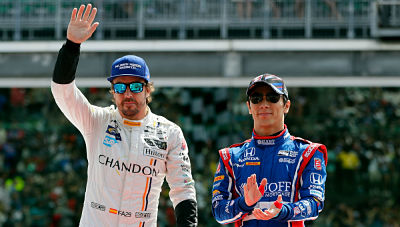

Fernando Alonso abandona por una rotura de motor Honda
El piloto asturiano abandonó a falta de 21 vueltas para el final de la carrera tras romper el motor cuando rodaba séptimo y con opciones de conseguir la victoria. Takuma Sato, otro coche Honda, se llevó el triunfo. Oriol Servià quedó K.O. en un accidente.
Y otra vez Honda. Otra vez el motor fallando a Fernando Alonso. Otra vez el ya famoso humo saliendo del monoplaza del asturiano. No, no ha sido en la Fórmula 1. Ha sido en las 500 Millas de Indianápolis, donde la 'relación' que mantienen el español y los nipones ha vivido un nuevo episodio. Fernando ha abandonado a falta de 21 vueltas por un fallo en su unidad de potencia cuando marchaba séptimo, puesto desde el que podría haber luchado por una victoria que se terminó llevando Takuma Sato.
Entre aplausos se marchó Fernando. Y no es para menos, pues su actuación en su debut en esta mítica prueba ha sido espectacular. Salía quinto, y aunque cedió varias posiciones en la salida lanzada, era rápido. Muy rápido. Tenía ritmo. Tanto que lideró la carrera durante muchas vueltas. Demostrando que de novato tenía poco. Demostrando que había ido a divertirse, pero también a ganar. Y lo tuvo en su mano.
Porque a pesar de que las banderas amarillas le perjudicaron llegó a las últimas vueltas con opciones de victoria. Entre los diez primeros después de su última parada, en el grupo de cabeza. Y con buen ritmo. Adelantando. Y disfrutando. Pero, de nuevo, y como en la Fórmula 1, el motor Honda cayó. En la vuelta 179 se terminó la carrera para él. No fueron pocas las unidades de potencia japonesas que se rompieron en las más de tres horas y media que duró la prueba.
Victoria de Sato... con motor Honda
En más de tres horas y media tras las que, eso sí, Honda se llevó la alegría de la victoria. Fue gracias a un excelso Takuma Sato, que se convierte en el primer japonés en coronar las 500 Millas de Indianápolis. El viejo conocido de la F1 estuvo agresivo, pero templado en sus intentos a veces alocados de adelantamientos. Por donde uno menos se lo esperaba, atacaba el nipón. Al final, y tras gran parte de la prueba rodando en la zona media, llegó su momento. El momento de darlo todo a falta de diez vueltas. No había quien le parase. Estuviera quien estuviera delante, Sato lo superaba. Y si había dos coches, también los superaba. Helio Castroneves intentó plantar batalla por el triunfo, pero el japonés le adelantó con solvencia para defender su posición en las últimas curvas. Takuma se llevó el premio de la victoria en una carrera con no pocos incidentes.